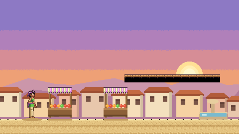

🎨 Proposta de novo visual — "suave, estilo Aladdin SNES"
Fase 1 (Itajubá) em 480×270, tamanho real do jogo. Nada no código do jogo foi alterado ainda.

1. Cena completa no tamanho exato do jogo (480×270).2. Mesma cena ampliada 2× para ver o detalhe dos tiles (areia sem grade de tijolos, bordas arredondadas, dither no céu).